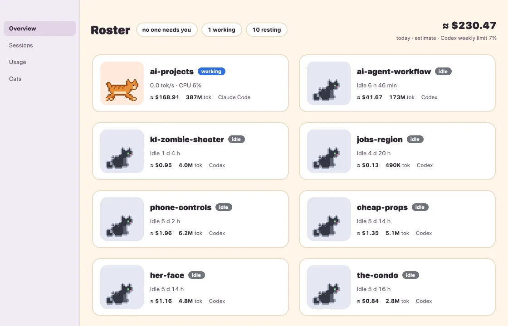
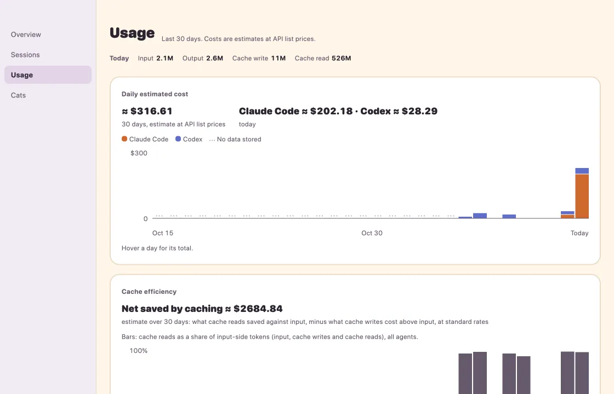

What it shows



These images are rendered by the app's own screenshot mode from the developer's real sessions, not mocked up.
What it reads, and how sure each number is
AgentPulse reads the agents' own files on your Mac and the system's process table. Every figure says whether it was measured or estimated, and anything it cannot know is shown as unavailable, never as zero.
| Figure | How sure | From |
|---|---|---|
| Tokens, model, start and last activity | measured | The agent's own usage records |
| Working, waiting, idle | measured | The agent's own session state. Codex CLI and OpenCode record no waiting-on-you state, so their sessions never show as waiting. |
| CPU and memory per session | measured | The macOS process table |
| Cost, Claude Code and Codex CLI | estimated | Tokens × API list prices, from a price table you can edit. A subscription plan is not reflected. |
| Cost, OpenCode and Grok CLI | recorded | The agent's own charge for each response; list prices where it records none |
| Plan limit | Codex and Claude Code | Codex's own records. Claude Code shares its limits only with a status line command, which you add yourself (see the README). |
| Active time | estimated | Gaps of up to 60 seconds between records |
| GPU per agent | unavailable | macOS has no documented way to measure it. Whole-Mac GPU use is shown instead. |
| Prompts, code, responses | never read | Only the metadata fields listed above are kept; content is never stored or shown |
The full method, agent by agent: telemetry specification.
Install
- Download the DMG, open it and drag AgentPulse to Applications.
- Open AgentPulse. A cat appears in the menu bar; closing the window keeps it running there.
- Updates: it checks GitHub for a new release and shows a notice. Nothing installs until you click Install Update, and an update is installed only if its signature checks out.
It is not in the App Store on purpose: the App Store sandbox would stop it reading other apps' session files and the process table.
Requirements
- macOS 14 or later on an Apple Silicon Mac.
- At least one of Claude Code, Codex CLI, OpenCode or Grok CLI on the same Mac.
Privacy
Everything AgentPulse reads stays on your Mac. It never reads or stores prompt, response or file content.
On its own it makes one kind of network request: the update check, which asks GitHub for the public list of AgentPulse releases every 2 hours. It sends no cookies, identifiers or anything about you or your agents; GitHub sees your IP address, as with any connection. You can turn the automatic check off in Settings.
Phone pairing is an opt-in setting for a companion phone app that is not released yet. Until you pair a phone, it sends nothing.
This page sets no cookies and loads nothing from anywhere else.